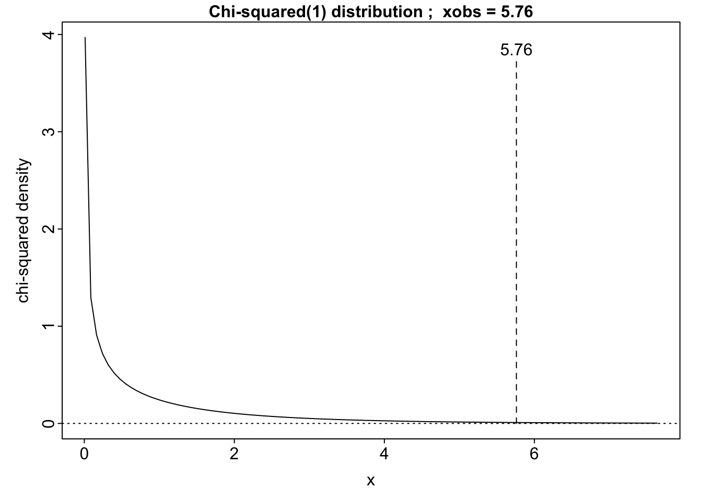

1.5 Non-linear mixed models
Indomethacin kinetics
Pharmacokinetics is an area where non-linear models arise naturally. In this experiment, six human volunteers were injected with identical doses of the drug indomethacin and their plasma concentrations of the drug (in mcg/ml) were subsequently measured at 11 time points until 8 hours post-injection. How should the decay of the drug, and the variation across volunteers, be modelled?
Source: Kwan, Breault, Umbenhauer, McMahon and Duggan (1976). Kinetics of Indomethicin absorption, elimination, and enterohepatic circulation in man. Journal of Pharmacokinetics and Biopharmaceutics, 4, 255-280.
The data are available in the
Indomethdataframe in thedatasetspackage (which is usually supplied with R).
Plots of the data is shown below.
library(ggplot2)
ggplot(Indometh, aes(time, conc, group = Subject, col = Subject)) + geom_line()
ggplot(Indometh, aes(time, conc)) + geom_line() + facet_wrap(~ Subject)
Pharmacokinetics often uses compartmental models which result in descriptions of decay over time in the form of sums of exponential terms. For this example, two exponential terms should suffice. If \(y_{ij}\) denotes the measurement on individual \(i\) at time point \(j\), then \[ y_{ij} = \beta_{1i} \exp(-\beta_{2i} t_j) + \beta_{3i} \exp(-\beta_{4i} t_j) + \varepsilon_{ij}, ~~~~~~ \beta_2>0, \beta_4>0. \] In order to make the problem identifiable, we can insist that \(\beta_{2i} > \beta_{4i}\) for each \(i\).
The left hand plot below, shows the results of fitting a single regression model to all the data, while the right hand plot fits a separate regression for each subject.
model <- nls(conc ~ SSbiexp(time, A1, lrc1, A2, lrc2), data = Indometh)
ggplot(Indometh, aes(time, conc)) + geom_point(aes(col = Subject)) +
geom_line(aes(y = fitted(model)), col = 'red')
library(nlme)
model <- nlsList(conc ~ SSbiexp(time, A1, lrc1, A2, lrc2), data = Indometh)
ggplot(Indometh, aes(time, conc, group = Subject)) + geom_point(aes(col = Subject)) +
geom_line(aes(y = fitted(model), col = Subject))A random effects model can be constructed as
\[
y_{ij} = (\beta_{1} + b_{1i}) \exp(-\exp(\beta_{2} + b_{2i}) \, t_j) +
(\beta_{3} + b_{3i}) \exp(-\exp(\beta_{4} + b_{4i}) \, t_j) + \varepsilon_{ij},
\]
where the additional use of \(\exp\) ensures that the coefficients inside the original \(\exp\) terms are positive. The code below shows what it is possible to do in nlme. The Pinheiro & Bates book explains this in greater detail and suggests some further amendments to the random effects and variance structure of the model.
## Nonlinear mixed-effects model fit by maximum likelihood
## Model: conc ~ SSbiexp(time, A1, lrc1, A2, lrc2)
## Data: Indometh
## AIC BIC logLik
## -91.19342 -71.48653 54.59671
##
## Random effects:
## Formula: list(A1 ~ 1, lrc1 ~ 1, A2 ~ 1, lrc2 ~ 1)
## Level: Subject
## Structure: Diagonal
## A1 lrc1 A2 lrc2 Residual
## StdDev: 0.5714106 0.1580778 0.1115978 8.172354e-06 0.08149341
##
## Fixed effects: list(A1 ~ 1, lrc1 ~ 1, A2 ~ 1, lrc2 ~ 1)
## Value Std.Error DF t-value p-value
## A1 2.8275372 0.2640124 57 10.709866 0e+00
## lrc1 0.7736221 0.1100261 57 7.031262 0e+00
## A2 0.4614716 0.1128084 57 4.090755 1e-04
## lrc2 -1.3441022 0.2310754 57 -5.816725 0e+00
## Correlation:
## A1 lrc1 A2
## lrc1 0.055
## A2 -0.102 0.630
## lrc2 -0.139 0.577 0.834
##
## Standardized Within-Group Residuals:
## Min Q1 Med Q3 Max
## -3.1733831 -0.3562727 -0.1285253 0.3423165 3.0025096
##
## Number of Observations: 66
## Number of Groups: 6